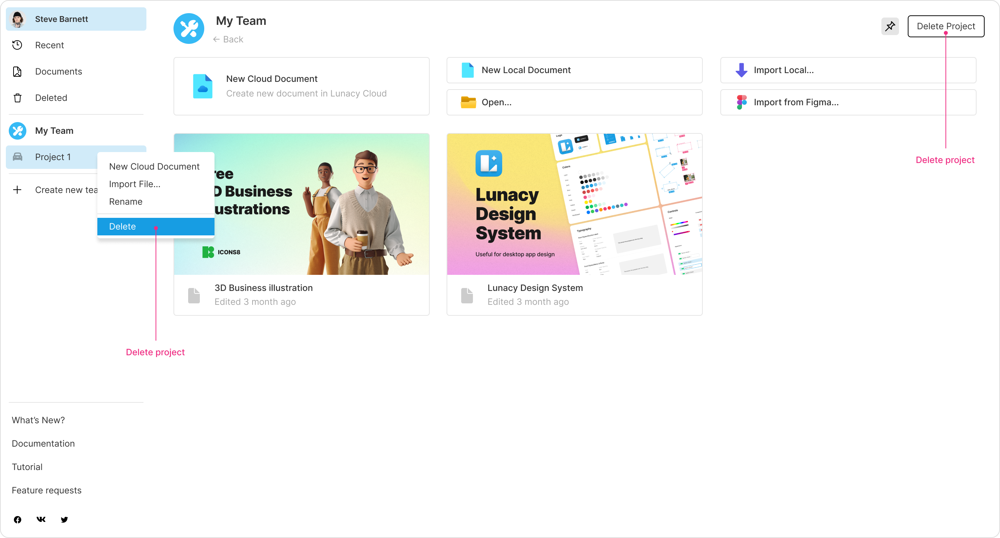

Learn how to organize teamwork
Create teams to optimize your workflow with design files and systems. With teams, you can collaborate with other users and organize your documents into projects, which work just like folders.
To start working with teams, log in to your Icons8 account. You can create and see your teams in the left panel of the Home tab.
This chapter covers the basics of working with teams, collaboration and project options, and team management.
Teams are available for all registered users. You can create one team on the trial plan and switch over to the paid team plan whenever you're ready.
| Feature | Trial team plan | Professional team plan |
|---|---|---|
| Cloud document limit | Up to 10 documents across all team projects (including deleted documents) | Unlimited |
| Document editors/exporters | Up to 3 | Unlimited |
| Document viewers | Unlimited | Unlimited |
| Version history | Last 30 days | Entire version history |
| Deleted files | Stored for 30 days | Stored forever |
| Team member limit | Up to 3 (including the team owner) | Add more members to your team as it grows ($4.99 per user/month) |
| Other | - | A personal cloud license for the team owner |
Once you decide to switch to the paid plan, click over the team name in the left panel of the Home tab. Click Upgrade plan and follow the instructions.
To create a team:
The user who created the team is the team owner.
Right-click the team name in the left panel to open up the context menu that lets you:
To manage your team, switch to the Home tab, then click the required team name in the left panel. The team screen will open up, featuring two tabs: Projects and Members.
To start creating team documents, you'll need at least one project to organize them. Think of projects as folders for your team's documents.
All the documents within team projects automatically become available to all team members.
To create a project:
Enter.You can now add documents to the project. Using the three prompts at the top of the project page, you can:
.sketch files.To show/hide a project name in the left panel, use the
Pin (
To rename a project, use the context menu in the left panel or click over the project name in the main area. To change the project avatar, simply click on it.
To delete a document from a project:
Deleted documents move to the Deleted section of the Home tab. There, you can restore or permanently delete documents.
To delete a project:
OR
Right-click over the project in the left panel, then click Delete on the context menu.
Use the Members tab to:

To create an invite link, click Invite user in the upper-right corner of the screen. The link ends up in your clipboard, and a new record appears in the list of team members. Until the invitee opens the link, you’ll see the Invite pending caption instead of their username.
Once a user opens the link, their username and avatar will show up on the Members tab. You can visit team member profiles by right-clicking their avatars.
Use the drop-down list in the Team permissions column to assign user roles to team members:
Can view. Assigned by default to all users joining a team via an invite link. Users with this set of permissions can only view the content of team documents.
Can export. This is for developer handoff. Users with this set of permissions can view designs, inspect layer properties, and export document layers.
Can edit. Users with this role can create and edit team documents, but they lack certain administrative permissions.
Admin. Team admins can do all of the above, as well as rename the team, change its avatar, assign roles to other members, and delete members from the team.
| Owner | Admin | Can edit | Can view | Can export | |
|---|---|---|---|---|---|
| Change the team plan | + | - | - | - | - |
| Delete the team | + | - | - | - | - |
| Leave the team | - | + | + | + | + |
| Rename the team | + | + | - | - | - |
| Change the team avatar | + | + | - | - | - |
| Assign roles to team members | + | + | - | - | - |
| Delete members from the team | + | + | - | - | - |
| Create documents | + | + | + | - | - |
| Rename documents | + | + | + | - | - |
| Delete documents | + | + | + | - | - |
| Create a project | + | + | + | - | - |
| Rename projects | + | + | + | - | - |
| Delete projects | + | + | + | - | - |
| Invite new members (copy invite links) | + | + | + | - | - |
| View the list of team members | + | + | + | + | + |
| View the list of projects | + | + | + | + | + |
| View the list of documents | + | + | + | + | + |
To delete a team, right-click the team name on the left panel of the Home tab, then select Delete. Note that only the team owner can delete the team.
Deleting the team means that: